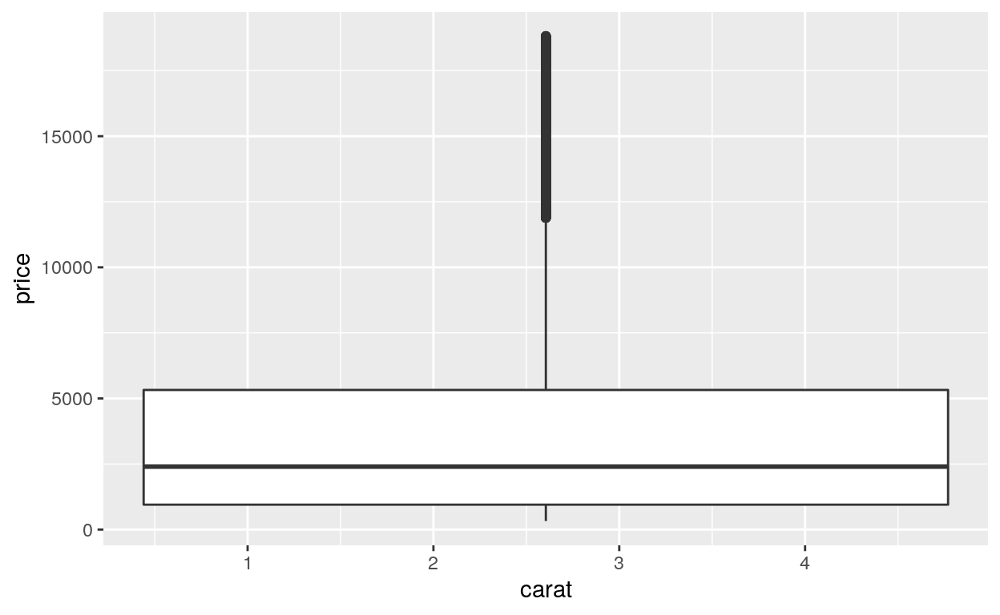
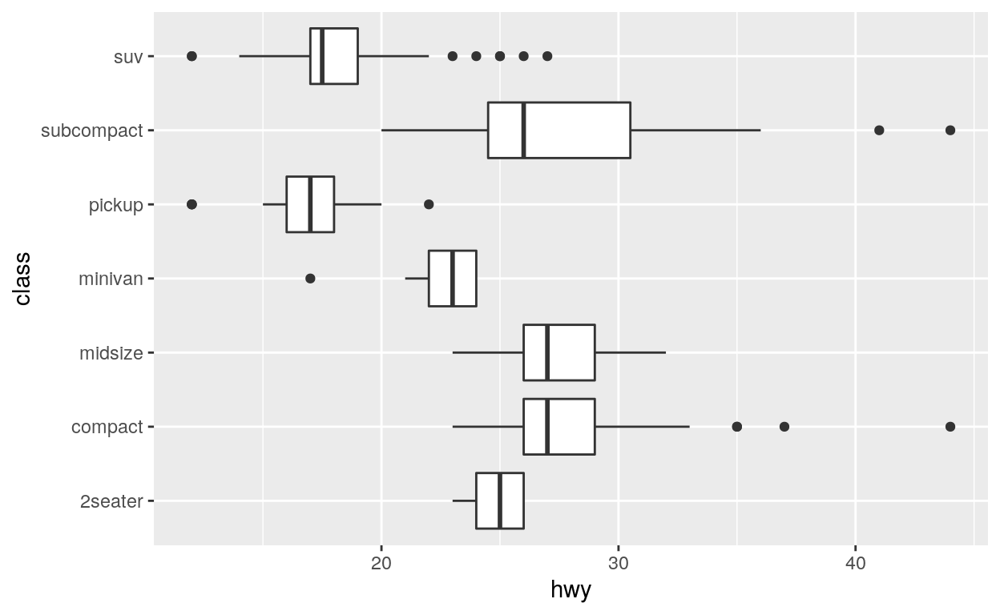
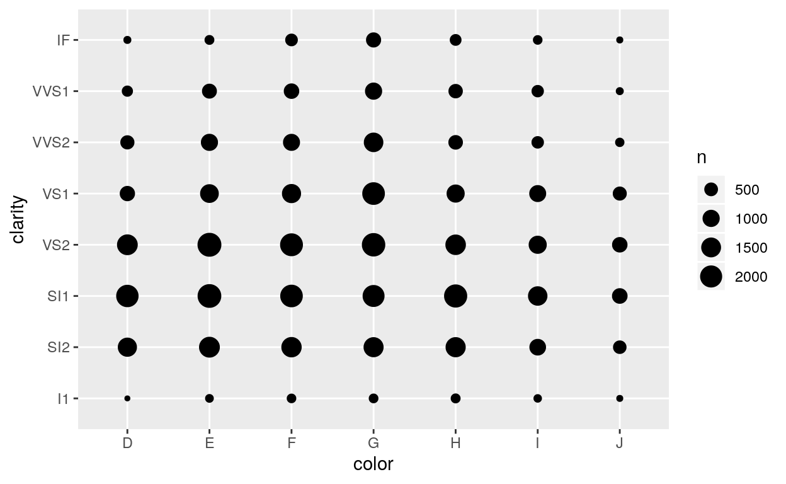
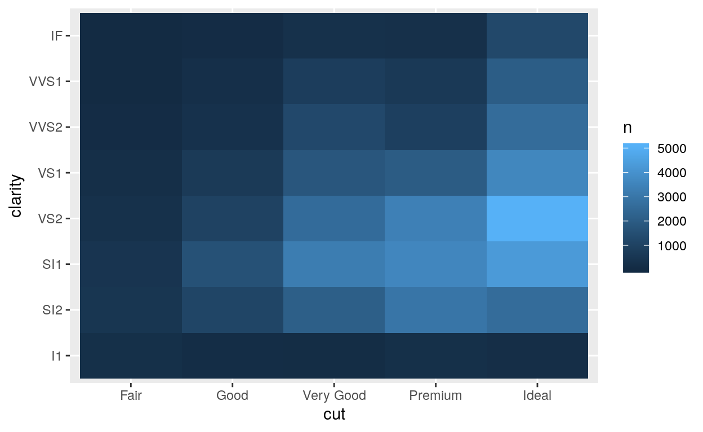
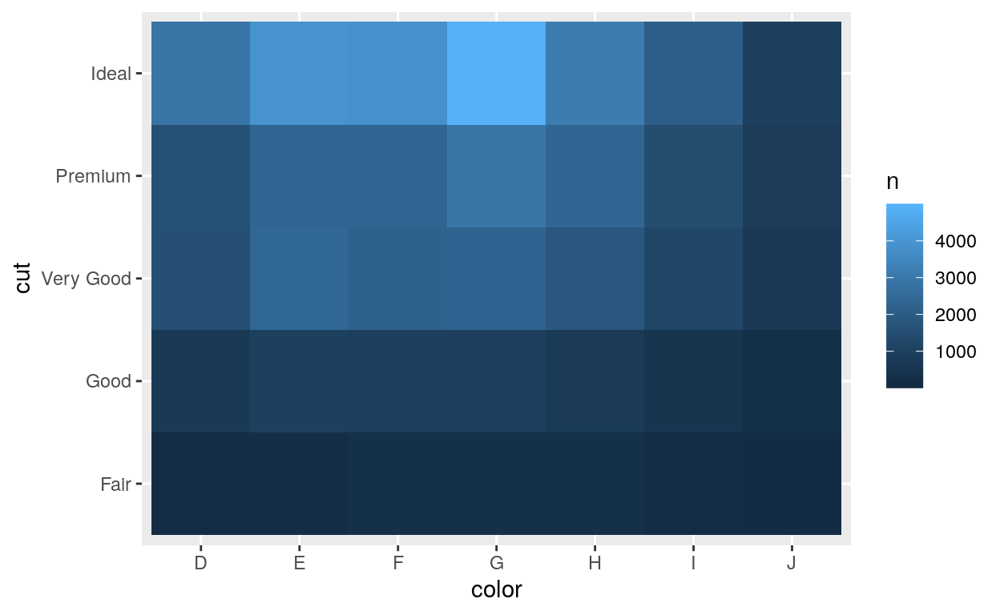

Welcome
Boxplots display the relationship between a continuous variable and a categorical variable. Count plots display the relationship between two categorical variables. In this tutorial, you will learn how to use both. You will learn how to:
- Make and interpret boxplots
- Rotate boxplots by flipping the coordinate system of your plot
- Use violin plots and dotplots, two geoms that are similar to boxplots
- Make and interpret count plots
The tutorial is adapted from R for Data Science by Hadley Wickham and Garrett Grolemund, published by O’Reilly Media, Inc., 2016, ISBN: 9781491910399. You can purchase the book at shop.oreilly.com.
The tutorial uses the ggplot2 and dplyr packages, which have been pre-loaded for your convenience.
Boxplots
Introduction
Exercise 1 - Boxplots

How to make a boxplot
To make a boxplot with ggplot2, add geom_boxplot() to the ggplot2 template. For example, the code below uses boxplots to display the relationship between the class and hwy variables in the mpg dataset, which comes with ggplot2.
ggplot(data = mpg) +
geom_boxplot(mapping = aes(x = class, y = hwy))
Categorical and continuous
geom_boxplot() expects the \(y\) axis to be continuous, but accepts categorical variables on the \(x\) axis. For example, here class is categorical. geom_boxplot() will automatically plot a separate boxplot for each value of \(x\). This makes it easy to compare the distributions of points with different values of \(x\).

Exercise 2 - Interpretation

Exercise 3 - Make a Boxplot
Recreate the boxplot below with the diamonds data set.
ggplot(data = diamonds) +
geom_boxplot(mapping = aes(x = cut, y = price))"Do you notice how many outliers appear in the plot? The boxplot algorithm can identify many outliers if your data is big, perhaps too many. Let's look at ways to suppress the appearance of outliers in your plot."Outliers
You can change how outliers look in your boxplot with the parameters outlier.color, outlier.fill, outlier.shape, outlier.size, outlier.stroke, and outlier.alpha (outlier.shape takes a number from 1 to 25).
Unfortunately, you can’t tell geom_boxplot() to ignore outliers completely, but you can make outliers disappear by setting outlier.alpha = 0. Try it in the plot below.
ggplot(data = diamonds) +
geom_boxplot(mapping = aes(x = cut, y = price), outlier.shape = 24,
outlier.fill = "white", outlier.stroke = 0.25)
ggplot(data = diamonds) +
geom_boxplot(mapping = aes(x = cut, y = price), outlier.alpha = 0)Aesthetics
Boxplots recognize the following aesthetics: alpha, color, fill, group, linetype, shape, size, and weight.
Of these group can be the most useful. Consider the plot below. It uses a continuous variable on the \(x\) axis. As a result, geom_boxplot() is not sure how to split the data into categories: it lumps all of the data into a single boxplot. The result reveals little about the relationship between carat and price.

In the next sections, we’ll use group to make a more informative plot.
How to “cut” a continuous variable
ggplot2 provides three helper functions that you can use to split a continuous variable into categories. Each takes a continuous vector and returns a categorical vector that assigns each value to a group. For example, cut_interval() bins a vector into n equal length bins.
continuous_vector <- c(1, 2, 3, 4, 5, 6, 7, 8, 9, 10)
continuous_vector## [1] 1 2 3 4 5 6 7 8 9 10cut_interval(continuous_vector, n = 3)## [1] [1,4] [1,4] [1,4] [1,4] (4,7] (4,7] (4,7] (7,10] (7,10] (7,10]
## Levels: [1,4] (4,7] (7,10]The cut functions
The three cut functions are
cut_interval()which makesngroups with equal rangecut_number()which makesngroups with (approximately) equal numbers of observationscut_width()which makes groups with widthwidth
Use one of three functions below to bin continuous_vector into groups of width = 2.
continuous_vector <- c(1, 2, 3, 4, 5, 6, 7, 8, 9, 10)
continuous_vector## [1] 1 2 3 4 5 6 7 8 9 10continuous_vector [1] 1 2 3 4 5 6 7 8 9 10cut_width(continuous_vector, width = 2)"Good job! Now let's apply the cut functions to our graph."Exercise 4 - Apply a cut function
When you set the \(group\) aesthetic of a boxplot, geom_boxplot() will draw a separate boxplot for each collection of observations that have the same value of whichever vector you map to \(group\).
This means we can split our carat plot by mapping \(group\) to the output of a cut function, as in the code below. Study the code, then modify it to create a separate boxplot for each 0.25 wide interval of carat.
ggplot(data = diamonds) +
geom_boxplot(mapping = aes(x = carat, y = price, group = cut_interval(carat, n = 2)))ggplot(data = diamonds) +
geom_boxplot(mapping = aes(x = carat, y = price, group = cut_width(carat, width = 0.25)))"Good job! You can now see a relationship between price and carat. You could also make a scatterplot of these variables, but in this case, it would be a black mass of 54,000 data points."coord_flip()
geom_boxplot() always expects the categorical variable to appear on the \(x\) axis, which create horizontal boxplots. But what if you’d like to make horizontal boxplots, like in the plot below?

You can do this by adding + coord_flip() to your plot call.
Exercise 5 - Horizontal boxplots
Extend the code below to orient the boxplots horizontally.
ggplot(data = mpg) +
geom_boxplot(mapping = aes(x = class, y = hwy))
ggplot(data = mpg) +
geom_boxplot(mapping = aes(x = class, y = hwy)) +
coord_flip()"Good job! `coord_flip()` is an example of a new coordinate system. You'll learn much more about ggplot2 coordinate systems in a later tutorial."Similar Geoms
geom_dotplot()
Boxplots provide a quick way to represent a distribution, but they leave behind a lot of information. ggplot2 supplements boxplots with two geoms that show more information.
The first is geom_dotplot(). If you set the binaxis parameter of geom_dotplot() to "y", geom_dotplot() behaves like geom_boxplot(), display a separate distribution for each group of data.
Here each group functions like a vertical histogram. Add the parameter stackdir = "center" then re-run the code. Can you interpret the results?
ggplot(data = mpg) +
geom_dotplot(mapping = aes(x = class, y = hwy), binaxis = "y",
dotsize = 0.5, binwidth = 1)ggplot(data = mpg) +
geom_dotplot(mapping = aes(x = class, y = hwy), binaxis = "y",
dotsize = 0.5, binwidth = 1, stackdir = "center")'Good job! When you set `stackdir = "center"`, `geom_dotplot()` arranges each row of dots symmetrically around the $x$ value. This layout will help you understand the next geom.
As in the histogram tutorial, it takes a lot of tweaking to make a dotplot look right. As a result, I tend to only use them when I want to make a point.'geom_violin()
geom_violin() provides a second alternative to geom_boxplot(). A violin plot uses densities to draw a smoothed version of the centered dotplot you just made.
You can think of a violin plot as an outline drawn around the edges of a centered dotplot. Each “violin” spans the range of the data. The violin is thick where there are many values, and thin where there are few.
Convert the plot below from a boxplot to a violin plot. Note that violin plots do not use the parameters you saw for dotplots.
ggplot(data = mpg) +
geom_boxplot(mapping = aes(x = class, y = hwy))
ggplot(data = mpg) +
geom_violin(mapping = aes(x = class, y = hwy))'Good job! Another way to interpret a violin plot is to mentally "push" the width of each violin all to one side (so the other side is a straight line). The result would be a density (e.g. `geom_density()`) turned on its side for each distribution).'Exercise 7 - Violin plots
You can further enhance violin plots by adding the parameter draw_quantiles = c(0.25, 0.5, 0.75). This will cause ggplot2 to draw horizontal lines across the violins at the 25th, 50th, and 75th percentiles. These are the same three horizontal lines that are displayed in a boxplot (the 25th and 75th percentiles are the bounds of the box, the 50th percentile is the median).
Add these lines to the violin plot below.
ggplot(data = mpg) +
geom_violin(mapping = aes(x = class, y = hwy))ggplot(data = mpg) +
geom_violin(mapping = aes(x = class, y = hwy), draw_quantiles = c(0.25, 0.5, 0.75))'Good job! Can you predict how you would use `draw_quantiles` to draw a horizontal line at a different percentile, like the 60th percentile?.'Counts
geom_count()
Boxplots provide an efficient way to explore the interaction of a continuous variable and a categorical variable. But what if you have two categorical variables?
You can see how observations are distributed across two categorical variables with geom_count(). geom_count() draws a point at each combination of values from the two variables. The size of the point is mapped to the number of observations with this combination of values. Rare combinations will have small points, frequent combinations will have large points.

Exercise 8 - Count plots
Use geom_count() to plot the interaction of the cut and clarity variables in the diamonds data set.
ggplot(data = diamonds) +
geom_count(mapping = aes(x = cut, y = clarity))count
You can use the count() function in the dplyr package to compute the count values displayed by geom_count(). To use count(), pass it a data frame and then the names of zero or more variables in the data frame. count() will return a new table that lists how many observations occur with each possible combination of the listed variables.
So for example, the code below returns the counts that you visualized in Exercise 8.
diamonds %>%
count(cut, clarity)Heat maps
Heat maps provide a second way to visualize the relationship between two categorical variables. They work like count plots, but use a fill color instead of a point size, to display the number of observations in each combination.
How to make a heat map
ggplot2 does not provide a geom function for heat maps, but you can construct a heat map by plotting the results of count() with geom_tile().
To do this, set the x and y aesthetics of geom_tile() to the variables that you pass to count(). Then map the fill aesthetic to the n variable computed by count(). The plot below displays the same counts as the plot in Exercise 8.
diamonds %>%
count(cut, clarity) %>%
ggplot() +
geom_tile(mapping = aes(x = cut, y = clarity, fill = n))
Exercise 9 - Make a heat map
Practice the method above by re-creating the heat map below.

diamonds %>%
count(color, cut) %>%
ggplot(mapping = aes(x = color, y = cut)) +
geom_tile(mapping = aes(fill = n))"Good job!"Recap
Boxplots, dotplots and violin plots provide an easy way to look for relationships between a continuous variable and a categorical variable. Violin plots convey a lot of information quickly, but boxplots have a head start in popularity — they were easy to use when statisticians had to draw graphs by hand.
In any of these graphs, look for distributions, ranges, medians, skewness or anything else that catches your eye to change in an unusual way from distribution to distribution. Often, you can make patterns even more revealing with the fct_reorder() function from the forcats package (we’ll wait to learn about forcats until after you study factors).